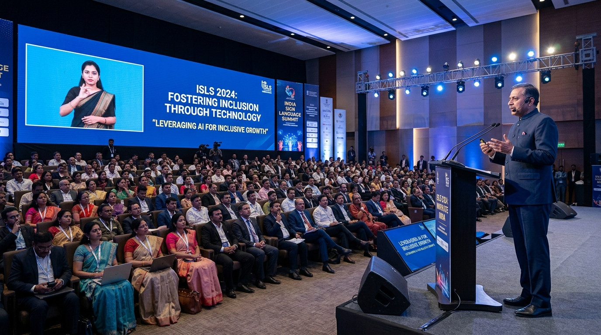

ISL Accessibility at Public Events & Conferences
Live projected ISL avatar overlay for auditoriums, government summits, televised broadcasts, and keynotes — ensuring every deaf attendee participates fully in real time.

Event Types We Serve
Conferences & Seminars
Live ISL translation of keynotes and panels - on dedicated side-screen or corner overlay.
Cultural & Arts Events
Theatre, music concerts, and art exhibitions with ISL signing for deaf attendees.
Political Rallies & Speeches
Public addresses and political speeches accessible to India's 68M+ deaf citizens.
School & University Events
Graduation ceremonies, annual days, and prize distributions in ISL.
Religious Gatherings
Sermons, prayers, and community announcements made accessible for deaf worshippers.
Live TV & Broadcasting
Real-time ISL overlay for live news broadcasts, sports commentary, and reality shows.
How It Works at Events
Live Audio Capture
SignISL connects to the event audio feed - no separate microphone needed.
<200ms Latency
AI translation and avatar signing happens in under 200ms - no visible delay.
Any Screen Format
Corner overlay, side-by-side, fullscreen, or dedicated ISL monitor - you choose.